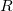

Gesamtanzahl der Anpassungspunkte
Freiheitsgrade des Modells
Der Wert des reduzierten Chi-Quadrats, gleich der Summe der Fehlerquadrate geteilt durch den Freiheitsgrad
Der

-Wert (gleich der Quadratwurzel von )
)Summe der Fehlerquadrate (RSS) oder Fehler der Summe der Quadrate
Pearsons Korrelationskoeffizient
Determinationskoeffizient
Korrigierter Determinationskoeffizient
Residuale Standardabweichung oder Quadratwurzel des mittleren quadratischen Fehlers
Betrag der Residuen; gleich der Quadratwurzel von RSS
Weitere Informationen finden Sie unter Statistik.
Ausgabe der Tabelle der Varianzanalyse
Weitere Informationen finden Sie unter ANOVA-Tabelle.
Ausgabe der Kovarianzmatrix
Weitere Informationen finden Sie unter: Kovarianz- und Korrelationsmatrix
Ausgabe der Korrelationsmatrix
Weitere Informationen finden Sie unter: Kovarianz- und Korrelationsmatrix
Ausgabe der Liste der Ausreißer
Um mehr darüber zu lernen, wie diese Statistiken nach der Anpassung interpretiert werden, beziehen Sie sich bitte auf dieses Dokument: Regressionsergebnisse interpretieren. |
Schlüsselwörter:Fit-Statistik, Lineare Kurvenanpassung